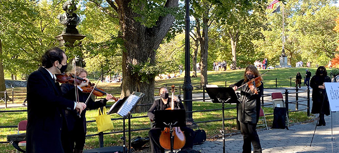

December, 2020, will mark the 250th birthday of Ludwig van Beethoven, the German pianist and composer widely considered to be one of the greatest figures in Western music. Clarion has received a permit from the City of New York to perform his marvelous String Quartet, Op. 18, No. 2, in several different locations in Central Park, including by Beethoven's statue in Bandshell Plaza.
The performance will be given in accordance with the City's safety guidelines, with performers, staff, and audience members required to be spaced out at least 6 feet apart and to wear face coverings.
